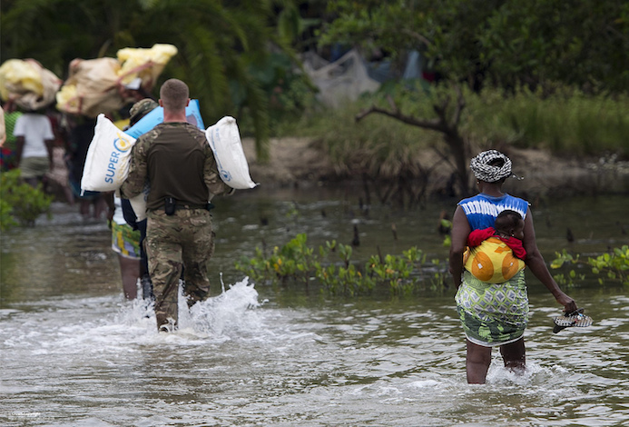
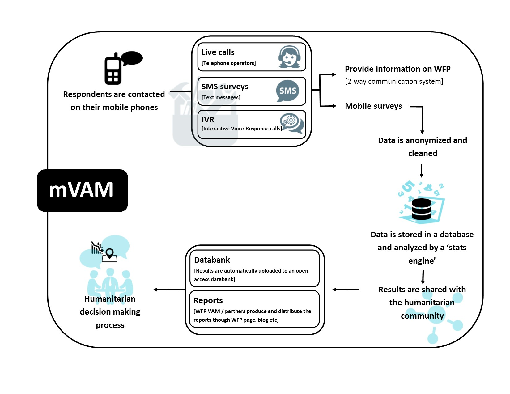

When open is not enough: bringing food security data to affected communities
More food security data than ever is being generated by technologies and agencies. To bring order to the ‘mess’ its data had become, the World Food Programme took an open approach – paving the way to bring information to hard-to-reach communities
 Humanitarian aid being delivered to remote Sierra Leonean islands, which were restricted with re-supply during the Ebola outbreak on the mainland. CC BY 2.0, uploaded by [PRODefence Images](https://www.flickr.com/photos/defenceimages/16363423388/in/photolist-qVYPFs-79TYnV-79XPey-79XPmG-79TYpv “PRODefence Images").
By Jean-Martin Bauer, Wael Attia and Alice Clough
When a natural or man-made disaster strikes, humanitarian responders need numbers about its impact in order to advocate and plan for an effective response. Reaching out to communities helps agencies understand how people have been affected, how they are coping and what assistance they need. The food security data landscape is complex: new technologies mean that more data than ever is collected by a mosaic of agencies.
The World Food Programme’s Food Security Analysis Unit is one of many groups engaged in such assessment work and data collection. In this piece we outline how we have approached data management in the information era, and the challenges we see ahead.
WFP going open – how and why
What really pushed us to 'go open' with our data? We recently started to collect data remotely through mobiles. We usually ask people what types of foods they have been consuming and what coping strategies they use to make ends meet. Our mobile VAM project – initially funded by the Humanitarian Innovation Fund – involves using SMS, ‘robocalls’ (where people respond to recorded audio messages) and operators to call people on phones they already have. Since no expensive smartphones or data plans are required, we can collect data quickly and safely, with minimal expense, leading us to source more information from more places than ever before.
We collected over 100,000 questionnaires using this method in 2015, a seven-fold increase from the previous year. However, while mobile data collection proved to be an effective way to collect a lot of data, it raised tremendous challenges that an open data approach helped solve.
Reality struck during the Ebola emergency in 2014. When we deployed mVAM for the Ebola response, we soon found ourselves drowning in a deluge of incoming SMS data and facing a steady stream of requests from partners who wanted access to our information in order to plan their responses. The emails and phone calls were piling up, and soon we found ourselves tangled in a web of Excel files and PDF reports. We desperately needed a way to put some order into the mess we had created, so we invested in systems that enabled us to adopt open data.
Here’s what we set up:

As the workflow shows, our survey data comes directly from respondents who take an SMS, IVR or voice survey. This data is then stored in a centralised open databank that covers the main indicators we use to measure food security in a database with a standardised schema. The most common indicators we use are the Food Consumption Score, the Coping Strategies Index and a measure of sentiment in the open-ended question our surveys include. We also collect data about food prices.
We are careful to protect people’s identities; respondents’ phone numbers are encrypted and never shared, and only aggregated data is shared on an open-access basis. Individual phone numbers or respondent names are replaced with anonymous IDs and are not imported into our central database. Using these techniques, we are ‘going open’ but still protecting people’s privacy.
There is then an Application Programme Interface (API) to ensure that our data is available in formats people can use, ensuring that the information doesn’t just die in PDF purgatory.
Thanks to the API, anyone will soon be able to produce real-time data visualisations from different streams of food security indicators, both captured from mVAM and other WFP tools. Aggregated mVAM data is also posted on OCHA’s Humanitarian Data Exchange (HDX) website, where it is available in a machine-readable format that can be shared with the entire humanitarian community, alongside other datasets of humanitarian interest.
But we soon noticed a limitation. While making our data ‘open’ led to many more people downloading our datasets, they tended to be from other UN agencies, donor governments, international NGOs or universities. Most of our visitors came from Europe and North America. We had comparatively few visitors from the countries where we collect the data, pointing to an important gap in our approach.
Beyond ‘open’: bringing data to the masses
We believe that data is not truly ‘open’ if all the 7 billion people on the planet couldn't access it in some form. Many behind the open data movement have largely focused simply on making data available online. But, as the World Bank’s recent 'Digital dividends' report shows, internet access is so limited that the data we post on the internet remains out of reach for billions – many of whom live in the least developed countries where we do much of our work.
We have been experimenting with different ways of sharing our information, including putting it on voice servers. In Goma, DRC, anyone can dial a number and listen to recordings of the week’s food prices, based on data we’ve collected with the communities we work with, and dates of food distributions, at no cost. Our office in Somalia uses SMS blasts and IVR to share news about WFP’s activities in the country as well as useful public information messages, for example on nutrition. Small victories, perhaps, that point to increasing opportunities to make data accessible to everyone.
Bringing information that matters to communities through the right channels
Our experience shows there’s a long way to go before humanitarian data is accessible for the people the humanitarian community serves. We need to make the information that matters accessible to all through the information channels that people in affected communities already use, from FM radio to phone hotlines to chat groups. We have a lot to learn from community-based organisations about what information matters most, and how to effectively engage with groups that can be harder to reach. We also know that the volumes of data we manage will continue to increase exponentially.
While technical solutions exist to analyse and disseminate large datasets, now is the time to work on the ‘soft’ aspects, including bolstering the skills and awareness of frontline field staff about responsible data use.
Jean-Martin Bauer is Senior Food Security Analyst, Wael Attia is Information and Knowledge Management Officer and Alice Clough works on Communications for the Vulnerability Analysis and Mapping department of the World Food Programme. Follow @WFPVAM and @mobileVAM on Twitter.
If you have ideas or experience in open data that you'd like to share, pitch us a blog or tweet us at @ODIHQ.